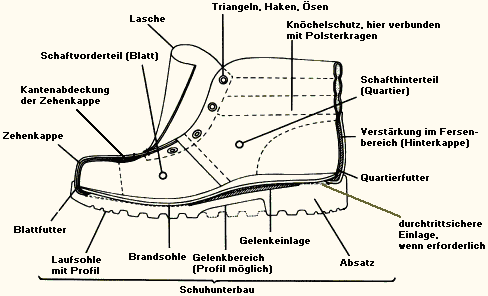
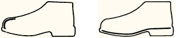
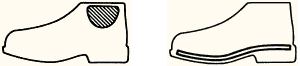
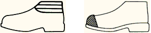
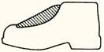

Im Sinne dieser BG-Regel werden folgende Begriffe bestimmt:
Zum Fußschutz zählen z.B. Sicherheitsschuhe (Sicherheitsschuhe mit Schutz gegen Kettensägenschnitte, Feuerwehrstiefel, Schuhe zum Schutz gegen Chemikalien und Ähnliches), Schutzschuhe, Berufsschuhe, Gamaschen und Überschuhe.
Siehe auch DIN EN ISO 20345 "Persönliche Schutzausrüstung; Sicherheitsschuhe" bzw. Abschnitt 4 des Anhanges 2.
Siehe auch DIN EN ISO 20346 "Persönliche Schutzausrüstung; Schutzschuhe" bzw. Abschnitt 4 des Anhanges 2.
Siehe auch Normen der Reihe DIN EN ISO 20347 "Persönliche Schutzausrüstung; Berufsschuhe" bzw. Abschnitt 4 des Anhanges 2.





Bild 2: Beispiele für sicherheitstechnische Ausrüstungen beim Fußschutz
Dies sind z.B.: Gamaschen für Arbeiten mit handgeführten Flüssigkeitsstrahlern, Schweißergamaschen, Gamaschen zum Schutz gegen Kettensägenschnitte.
Siehe auch DIN EN 14404 "Persönliche Schutzausrüstung; Knieschutz für Arbeiten in kniender Haltung", Typisierung siehe Anhang 3.